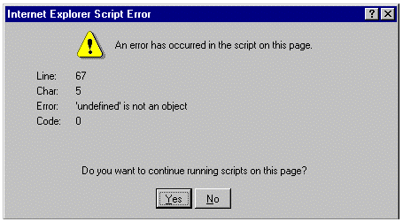

JavaScript libraries:
How did we get here?
Dan Scott (dscott@laurentian.ca)
Associate Librarian, Chair of the Library & Archives, Systems Librarian, …
Browser Wars!
This page best viewed with...
This page best viewed with...
JavaScript vs. JScript… ECMAScript!
1, 2, 3, 4, 5, 6/2015, 2016, 2017
Thank you ECMA TC 39!
Array.prototype.forEach()
- Executes a function once for each array element[1]
var flavours = ['orange', 'lemon']; var styles = ['ice cream', 'sherbet']; flavours.forEach(function(flavour) { for (let style of styles) { console.log(flavour + ' ' + style); } }); - Added to Firefox 1.5 in 2005[2]
- ... and to Internet Explorer 9 in 2011[3],
- ... but only in Quirks mode
DOM DOM DOM DOM…
- DOM is a W3C standard
- but standards implementation progress is uneven
- Microsoft did not add
querySelector()until IE9[1]
Performance is variable
- JavaScript engines include:
 SpiderMonkey, TraceMonkey
SpiderMonkey, TraceMonkey V8
V8 Chakra
Chakra SquirrelFish / FTL
SquirrelFish / FTL
 SpiderMonkey, TraceMonkey
SpiderMonkey, TraceMonkey V8
V8 Chakra
Chakra SquirrelFish / FTL
SquirrelFish / FTLDocument all the things(?)
- Sites sprang up to help harried developers compare browser support, like:
- quirksmode.org (stale as of 2013)
- caniuse.com
- Mozilla Developer Network (MDN)
- Massively helpful; occasionally entertaining
- …but reimplementing workarounds is not fun/financially wise
Libraries: encoded, shared wisdom
1. In programming, a collection of routines stored in a file. Each set of instructions in a library has a name, and each performs a different task.
2. A collection of software or data files. Microsoft Computer Dictionary. (2002). Redmond, WA: Microsoft Press.
- Librarians do the hard work so you don't have to!
 (2005-2015)
(2005-2015)

Prototype takes the complexity out of client-side web programming. Built to solve real-world problems, it adds useful extensions to the browser scripting environment and provides elegant APIs around the clumsy interfaces of Ajax and the Document Object Model. http://prototypejs.org/
Originally developed with Ruby on Rails
 (2005-2015)
(2005-2015)
$()for selecting elements by ID!$$()for CSS selector syntax!Ajax.Requestfor cross-browser Ajax!
$('itemId').hide();$('div img.loading').hide();new Ajax.Request('/some_url', {
method:'get',
onSuccess: function(transport) {
alert("Success!\n\n" + transport.responseText || "no text");
},
onFailure: function() { alert('Something went wrong...'); }
}); (2005-2010)
(2005-2010)

UI library that builds on Prototype.js
- Drag and drop interaction
- Autocompletion text widget
- Animation framework
- Minimalist browser feature detection library launched in 2009
<html>element gets aclassattribute of(no-)feature-namefor each feature<html class="gamepads video webgl no-emoji">- Programmatic access via a global
Modernizrobjectif (Modernizr.awesomeNewFeature) { showOffAwesomeNewFeature(); } else { getTheOldLameExperience(); }
- Supports custom builds for a subset of features
 (2004-)
(2004-)

The Dojo Toolkit began in 2004 by a group of like-minded JavaScript engineers that were tired of reinventing the wheel and hacking around browser inconsistencies. https://dojotoolkit.org/community/roadmap/vision.html
 (2011-)
(2011-)
in "modern" Dojo, if you are about to access something in the global namespace STOP because you are doing something wrong https://dojotoolkit.org/documentation/tutorials/1.10/modern_dojo/index.html
 (2011-)
(2011-)
- Dojo packages functionality into modules:
dojo/domfor selecting elements by ID!dojo/queryfor CSS selector syntax!dojo/requestfor cross-browser Ajax!
require(["dojo/dom", "dojo/domReady!"], function(dom){
dom.byId("helloworld").innerHTML = "Hello New World!";
});require(["dojo/query", "dojo/dom", "dojo/domReady!"],
function (query, dom) {
// retrieve an array of nodes with the ID "list"
var list = query("#list")[0];
}
)
require(["dojo/request"], function(request){
request.get("/some_url", {
data: {
id: 123
},
// The type of data we expect back
handleAs: "json"
}).then(function(response){
console.log("response:", response);
}, function(err){
console.log("error:", err);
});
}); (2011-)
(2011-)
 (2006-)
(2006-)

Originally developed by John Resig
$()for selecting elements by CSS selector$.ajaxfor cross-browser Ajax!
$('#itemId').hide("slow");
$('body').innerHtml =
"<h1>Good news, everyone!</h1>";
$.ajax({
url: "/some_url",
type: "GET",
data: { id: 123 },
dataType : "json",
}).done(function(response) {
console.log("response:", response);
}).fail(function(xhr, status, err) {
alert('Something went wrong...');
console.log("Error: " + err);
console.dir(xhr);
}).always(function( xhr, status ) {
alert("The request is complete!");
});
 (2006-)
(2006-)
UI library that builds on jQuery
- Drag and drop interaction
- Autocompletion text widget
- Animation framework
a touch-optimized HTML5 UI framework designed to make responsive web sites and apps that are accessible on all smartphone, tablet and desktop devices http://view.jquerymobile.com/master/demos/
- Last stable release was in October, 2014
- Current demos load 1,277 KB of JavaScript and CSS!?!

Getting modern
Sortable
"for modern browsers and touch devices. No jQuery."
http://rubaxa.github.io/Sortable/
Google Charts
three.js : 3D animation
"an easy to use, lightweight, 3D library"
https://github.com/mrdoob/three.js/
A-Frame : WebVR
"A web framework for building virtual reality experiences"
https://aframe.io/
And I'm famous!
Loading up your toolbox
caniuse.com
- Compatibility tables for common browsers vs.:
- JavaScript
- HTML5
- CSS
webpagetest.org
- Evaluates web page performance:
- Simulates different conditions (for example, cable vs. cell phone)
- Captures screenshots, progress, performance bottlenecks
- Easy to share results
- Suggests possible optimizations (caching, etc)
Developer tools: Firebug extension
- Firebug extension (ca. 2006) made View source dynamic:
- editable HTML
- editable CSS
- network monitoring
- JavaScript debugging, …
Native dev tools
- Browser makers saw how popular Firebug became and thought "Good idea, let's bake that right in!"
Dev tools: Console
- Hit
F12orCTRL-Shift-iand select Console - Where all the warnings and errors hide
- Log with
console.error(),console.info(),console.log()
So much better than...
Image courtesy http://ganex-t.blogspot.ca/2009_11_01_archive.html- Run arbitrary JavaScript
alert(2 + 2); 1 == "1"; 1 === "1";- Modify browser objects and properties
// Manipulate browser history window.history.back(); // Change the browser URL window.location.href = 'https://laurentian.ca'; function be_john_malkovich() { // image via https://www.flickr.com/photos/vhf/4058845635 let malkovich = 'https://goo.gl/uYmCUg'; document.querySelectorAll('img').forEach( function(el) { el.src = malkovich; }); }Dev tools: Inspect element
- Right-click any part of a web page and Inspect element to see and manipulate dynamically:
- Elements and attributes
- CSS rules - applied and computed
- Event listeners (Chrome)
Dev tools: Network monitoring
- Hit
F12orCTRL-Shift-iand select Network- Shows all requests and responses
- Waterfall view of requests
- Timing / performance - network throttling optional!
Dev tools: JavaScript debugging
- Hit
F12orCTRL-Shift-iand select Debugger (Firefox)- Set breakpoints in scripts, DOM modification, XHR (Chrome)
- Step through, into, out of scopes
- Inspect variable values
Vanilla JavaScript!
References
- Mozilla Developer Network (MDN) at https://developer.mozilla.org/en-US/
- Google Developers (Web) at https://developers.google.com/web/
- Resig, J., Ferguson, R., Paxton, J. (2015). Pro JavaScript Techniques (Second Edition). Berkeley, CA: Apress. Retrieved from https://laurentian.concat.ca/eg/opac/record/2916930
- Olsson, M. (2015). JavaScript Quick Syntax Reference. Berkeley, CA: Apress. Retrieved from https://laurentian.concat.ca/eg/opac/record/2916905
Next time
Modern JavaScript tooling
- nodejs & npm
- Build systems (gulp / grunt)
Awareness initiatives
- Progressive Web Apps (PWAs)
- Accelerated Mobile Pages (AMP)
Frameworks
- Angular
- React
Deets
- Slides: stuff.coffeecode.net/2017/javascript_libraries
- Email: dscott@laurentian.ca
- Social: @denials / +DanScottCAN
- Blog: coffeecode.net

This work is licensed under a Creative Commons Attribution-ShareAlike 4.0 International License - Log with